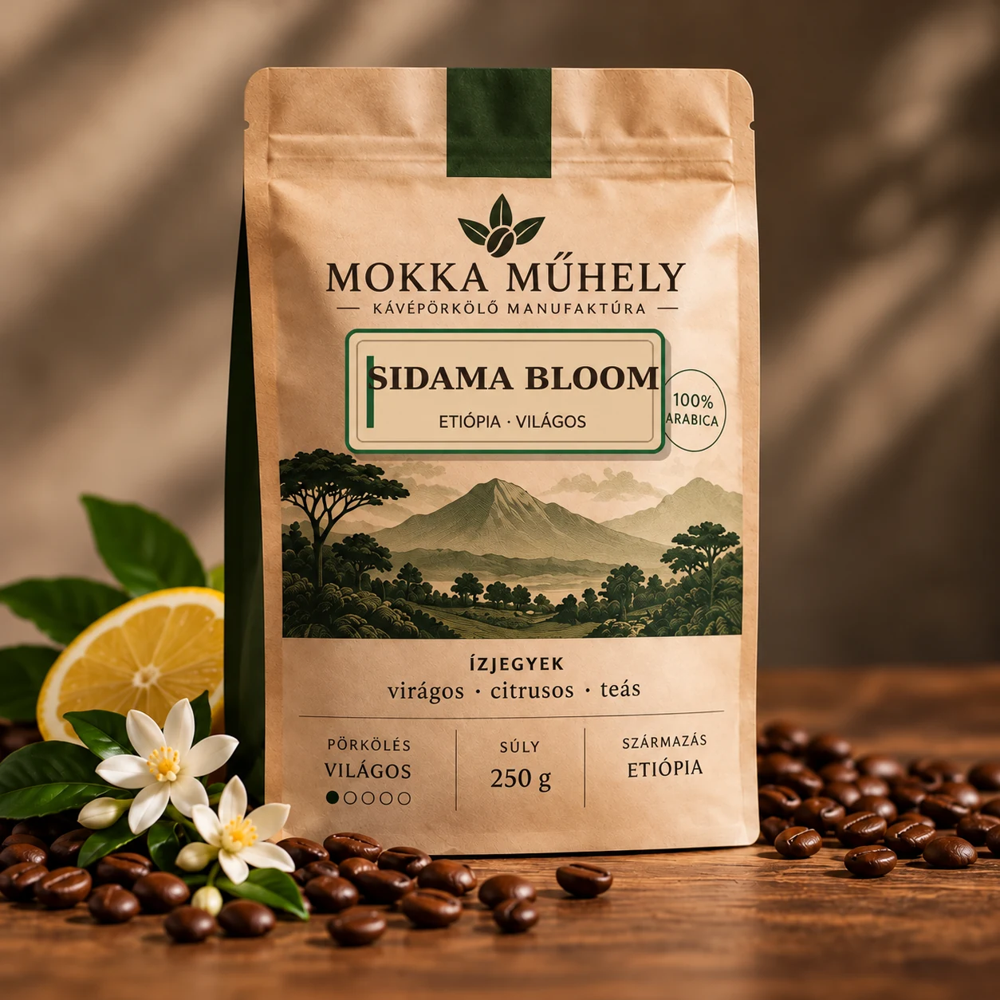
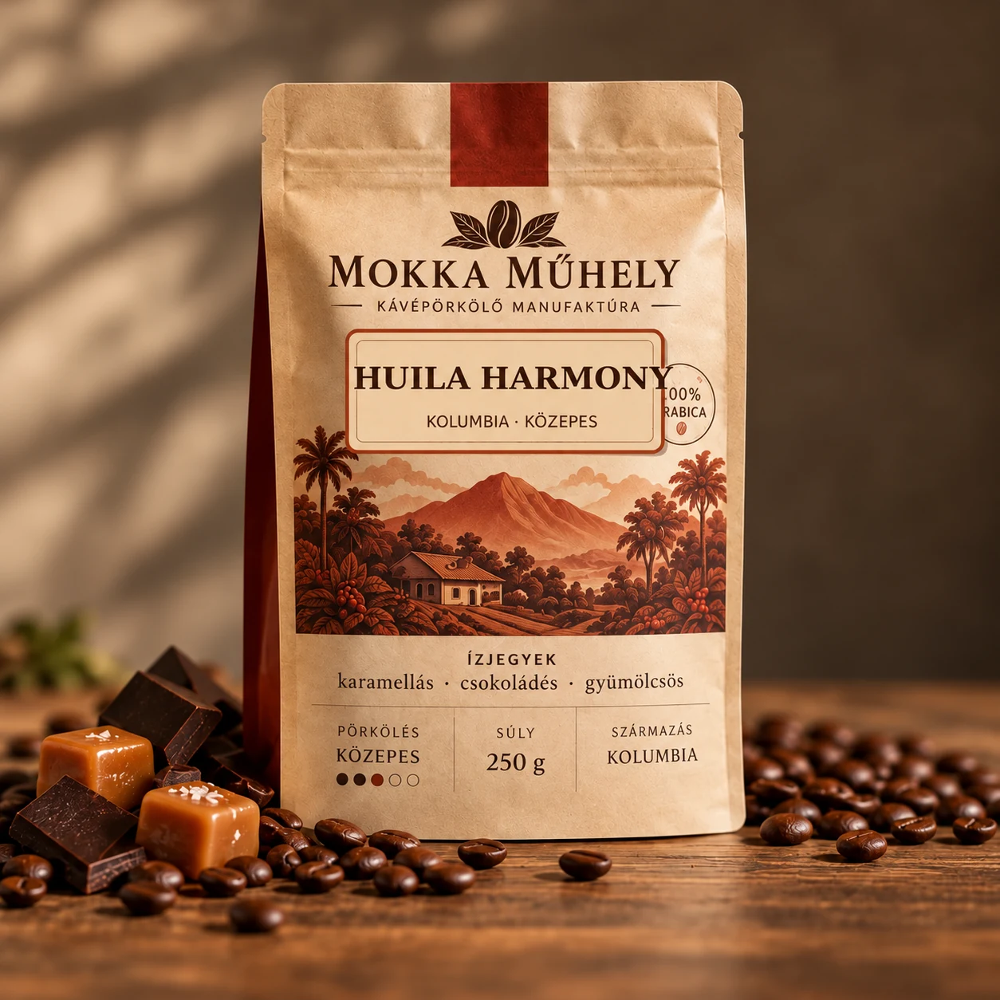
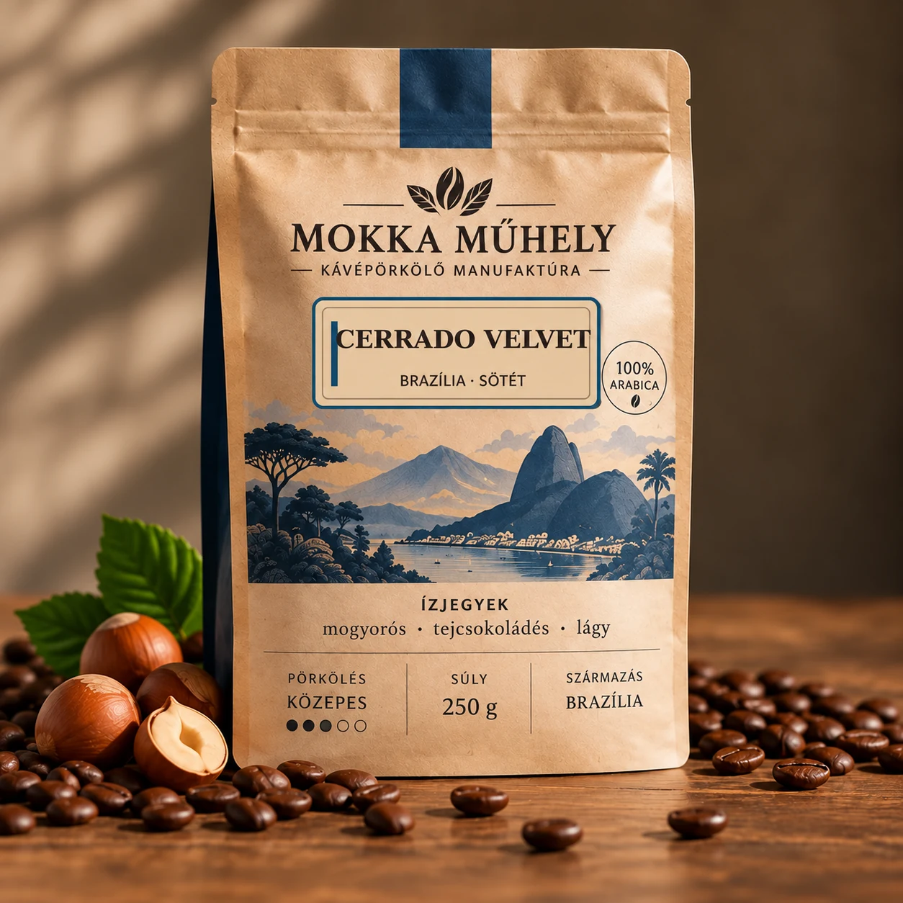
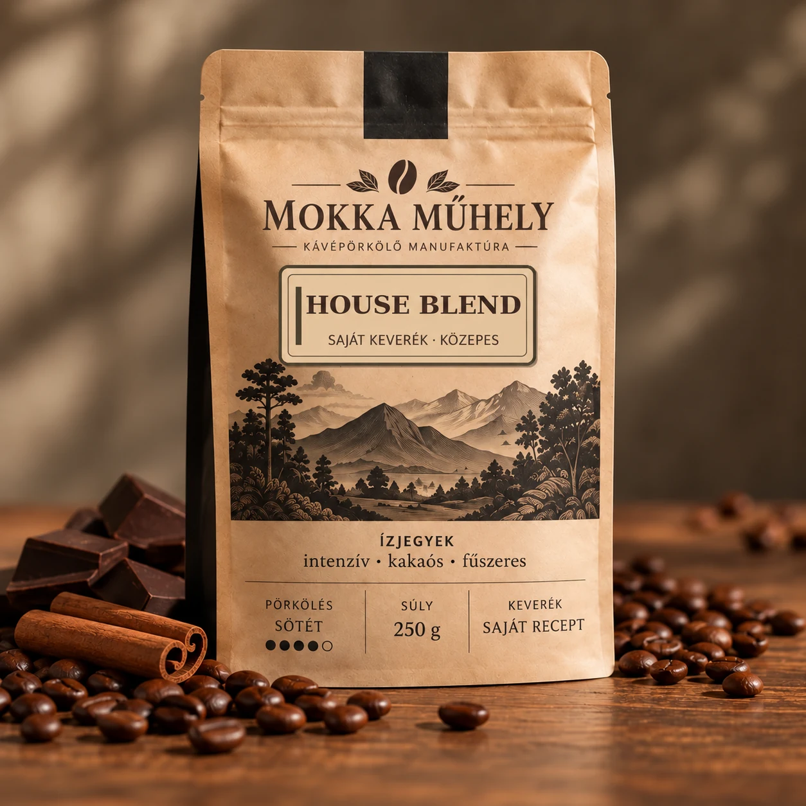
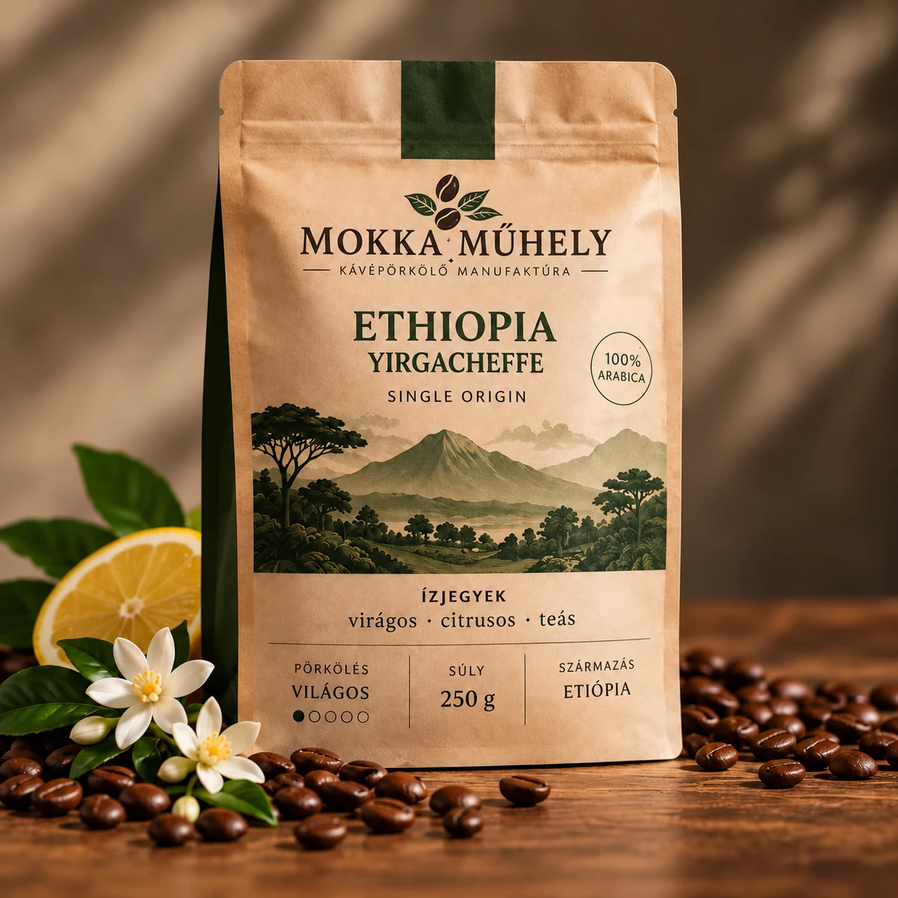
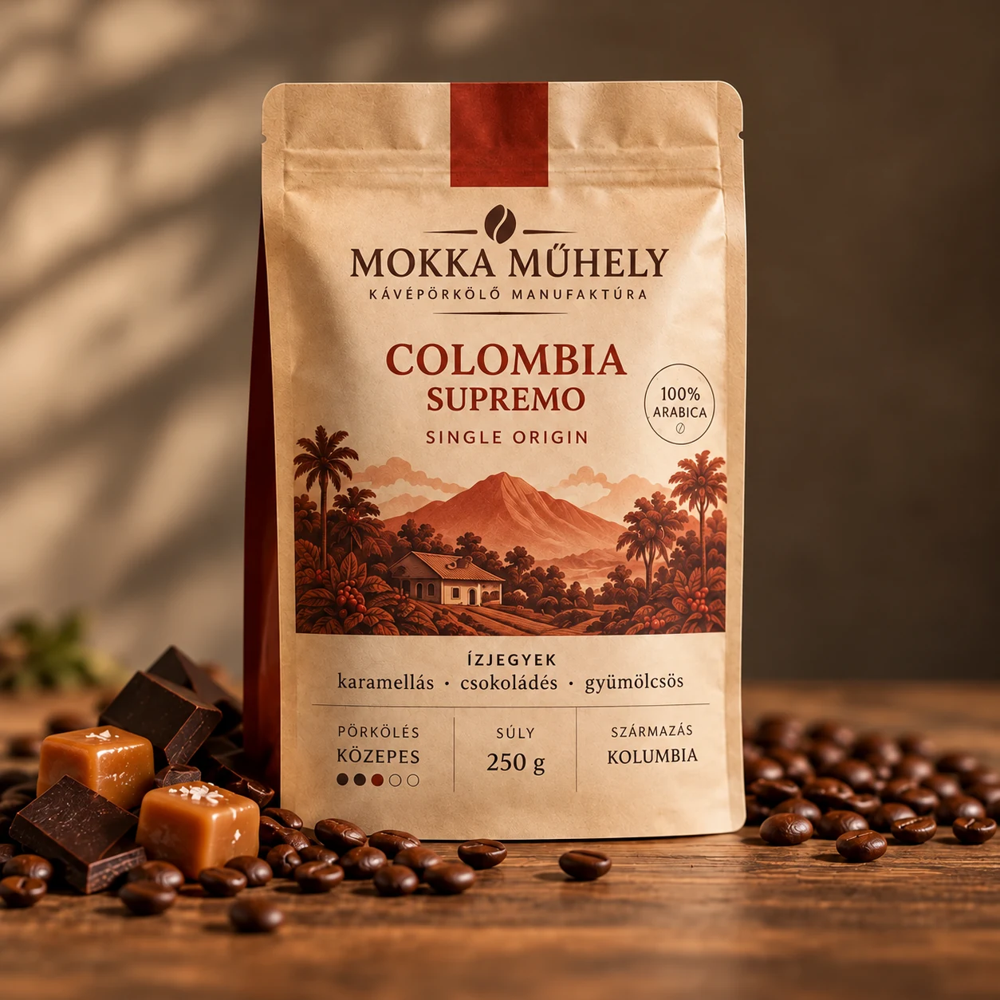
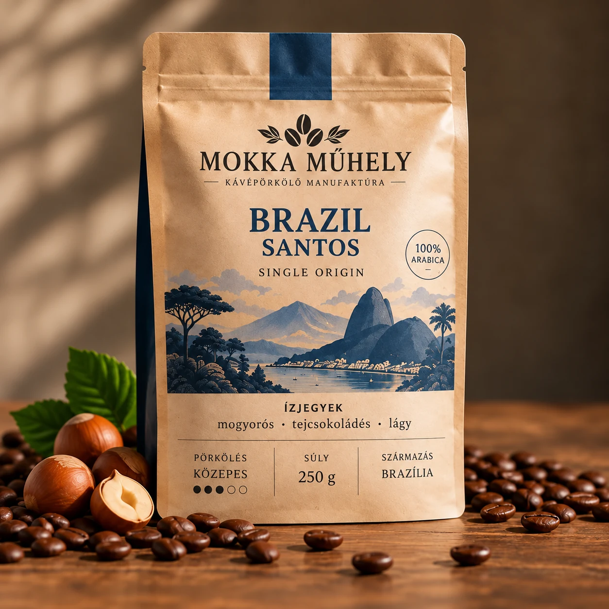
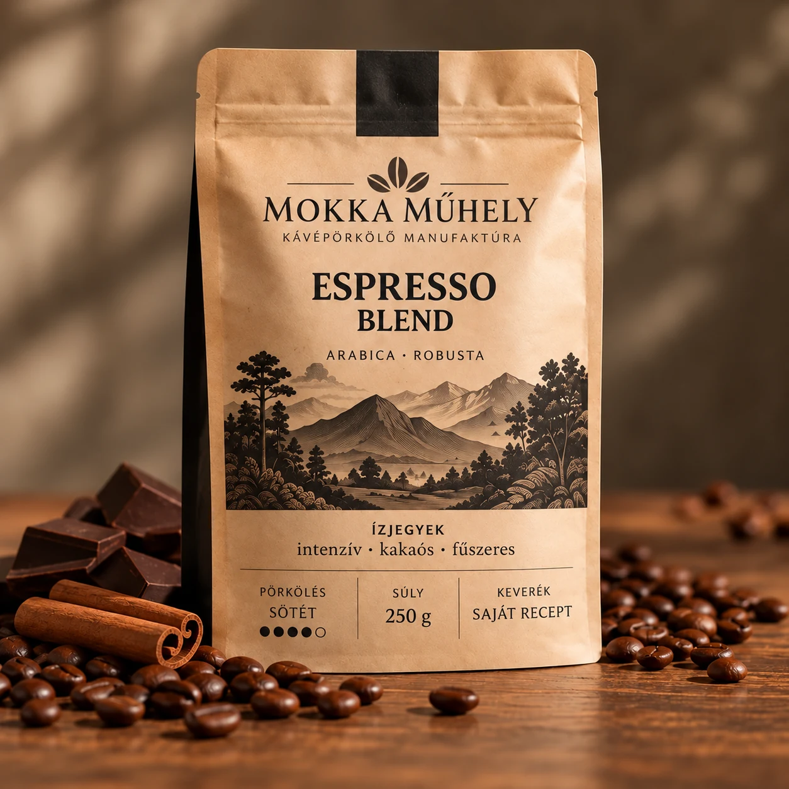
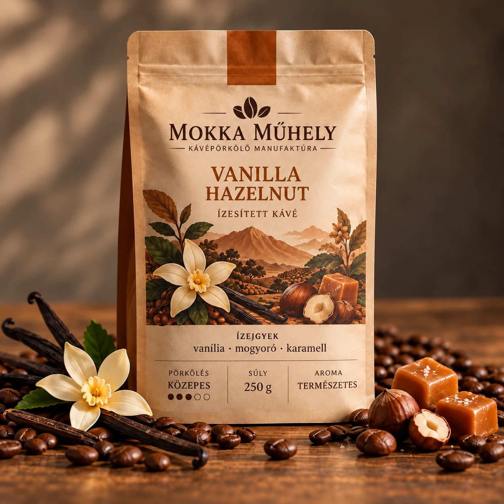
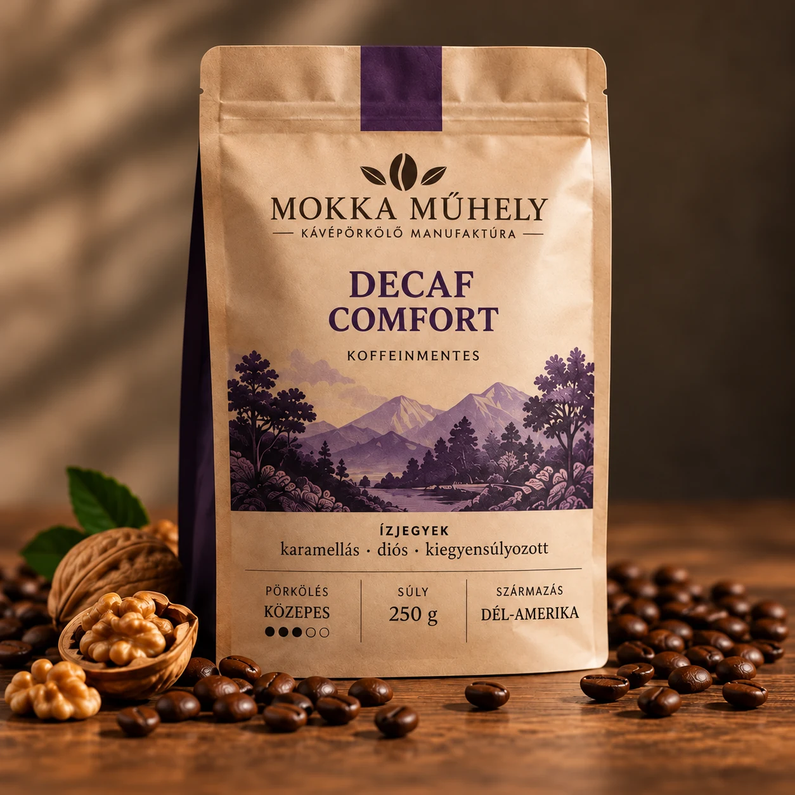

GYÜMÖLCSÖS KEDVENC

ETIÓPIA · VILÁGOS
Sidama Bloom
Jázmin, citrus, édes bogyós gyümölcsök. Egy igazán élénk reggel.
4 490 Ft
A REGGELEK ÚJ KEDVENCE
Kis tételben pörkölt, gondosan válogatott kávészemek. Mert hisszük, hogy minden csészében ott lehet valami különleges.
TALÁLD MEG A SAJÁT ÍZED
Gyümölcsös és könnyed? Vagy mély, csokoládés karakter? Nálunk minden hangulathoz találsz egy csészével.

Jázmin, citrus, édes bogyós gyümölcsök. Egy igazán élénk reggel.

Karamell, piros alma és lágy csokoládé. Harmónia egy csészében.

Étcsokoládé, pörkölt mogyoró és telt test. Klasszikus, gazdag ízvilág.

Tejcsokoládé, mogyoró és egy leheletnyi karamell. Mindennapokra hangolva.

Virágos, citrusos, gyümölcsös és teára emlékeztető

Kiegyensúlyozott, karamellás, csokoládés és finoman gyümölcsös ízvilágú arabica kávé.

Lágy, mogyorós és tejcsokoládés ízvilág, alacsony savassággal. Tökéletes választás a klasszikus kávék kedvelőinek.

Intenzív, testes arabica és robusta keverék. Kakaós, fűszeres ízjegyek és karakteres lecsengés minden csészében.

Vaníliás és pörkölt mogyorós aromákkal gazdagított kávé, finom karamellás karakterrel. Egy igazi desszertélmény.

Kiegyensúlyozott, koffeinmentes arabica kávé, karamellás és diós ízjegyekkel. A kávézás öröme a nap bármely szakában.
* A termékek és az árak egy egyetemi projekt fiktív adatai.
SEGÍTÜNK VÁLASZTANI
Válaszd ki a kedvenc ízvilágodat, és megmutatjuk, mely kávéink illenek hozzád.
Melyik ízvilágot szereted leginkább?
A SZEMEKTŐL A CSÉSZÉIG
A jó kávé mögött figyelem, szakértelem és sok-sok kísérletezés áll. Mi ezekben hiszünk.
Karakteres termőterületekről származó, gondosan válogatott zöld kávészemekkel kezdünk.
Minden tételnek saját pörkölési profilt tervezünk, hogy kihozzuk a legjobb ízjegyeket.
Kis adagokban, pontos hőmérséklet- és időkontroll mellett formáljuk a szemek karakterét.
A frissen pörkölt szemeket gondosan csomagoljuk, hogy otthon is élvezhesd az aromákat.
TÖBB, MINT EGY REGGELI RUTIN
A Mokka Műhely ötlete egy egyszerű kérdésből született: miért ne lehetne a mindennapi kávé igazán emlékezetes?
Ezért képzeltünk el egy olyan kávépörkölő manufaktúrát, ahol a minőség fontosabb a mennyiségnél, a pörkölés pedig nem futószalag, hanem alkotómunka.
BESZÉLGESSÜNK A KÁVÉRÓL
Szívesen segítünk eligazodni az ízek és pörkölési profilok között. Írj nekünk egy üzenetet!